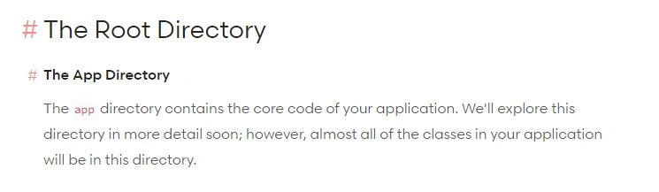
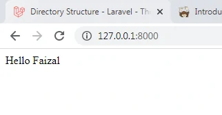
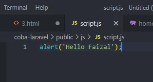

Struktur Folder, Routes & View
Untuk mengetahui masing2 fungsi folder
- buka dokumentasinya : https://laravel.com/docs/9.x/structure
- contohnya direktori app : tersimpan code utama dari aplikasi kita

MVC & Folder penting
- Model : App/Models/
- View : resources/views/
- Controller : app/Http/Controllers
- Folder/file Routes : untuk kita melakukan routing / penjaluran
- letak : routes/web.php
- kita akan register routes / penjaluran untuk web aplikasi kita
- jadi kalo misal kita mengetikkan apa diURL maka akan ditangani oleh routes yang mana
- secara default kita sudah dikasih 1 buah routes untuk menangani ketika user mengetikkan '/' atau routes dari website kita
- Folder Public
- Tempat menyimpan aset2 statis kita
- misal kita punya file css, js, img kita simpan dipublic
- file .env
- ini adalah file untuk menentukan envirounment dari aplikasi laravel kita
- kedepannya kita mungkin akan mengubah isi dari file envirounment ini, misal kita akan terkoneksi ke database MySQL, username, password, dll
- kita ubah dulu APP_URL : http://127.0.0.1:8000/

Kenapa pada saat kita akses URL yang tampil halaman ini
- kita pelajari routing
- buka file routes/web.php
- kita diberi route default
- cara membacanya :
- Route:: : jika ada rute
- get : method request get
- '/' : yang alamatnya adalah (slash / tidak memberi apa2 selain nama website kita)
- function : maka jalanakan ini
- view : tampilkan file ambil dari views
- jika kita ubah maka akan error
- karena kita sudah mengubah route nya menjadi milik /about
- sebenarnya kita bisa menampilkan apapun
- return view maksudnya : tampilkan sebuah view yang namanya welcome
- laravelnya akan mencari sebuah file yang namanya welcome didalam folder view(resources/views)
- untuk nama views ada bladenya itu tempating engine



Mencoba routing dengan tulisan
- buka file routes/web.php
- Hasilnya :
Menampilkan dengan view
- masuk ke file routes/web.php
- Hasilnya error karena belum membuat file viewnya
- buat file view baru
- masuk folder resources/views/home.blade.php
- Hasilnya :
- buat juga untuk about dan posts
- hasil :
Menambahkan CSS
- Bikin file di folder public/style.css
- hasil :
Menambahkan file JavaScript
- Buat folder & file baru : public/js/script.js
- Hasil :

Menambahkan gambar dan isi
- buka file resources/views/about.blade.php
- Hasil :

Mengirimkan data dari routes ke view
- Menambahkan parameter tambahan
- buka file routes/web.php
- panggil nama key nya sebagai variable
- buka file resources/views/about.blade.php
- Hasil :